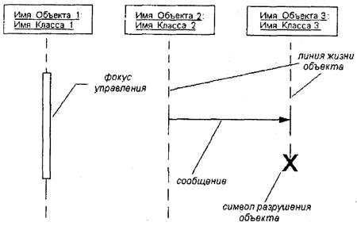
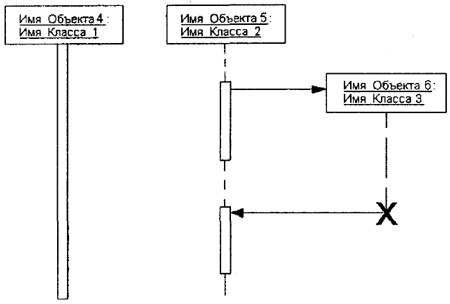
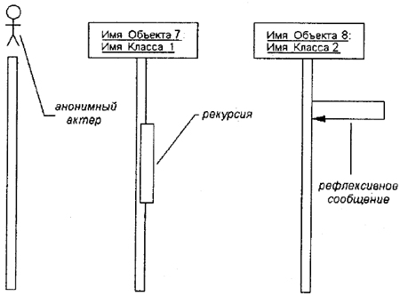
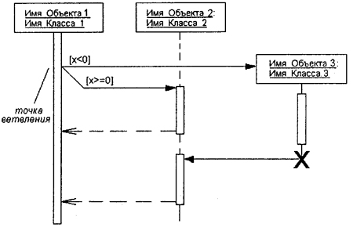
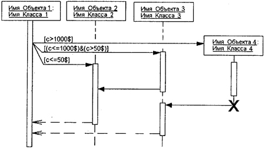
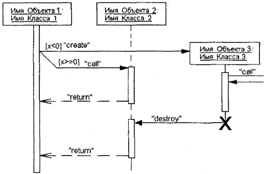
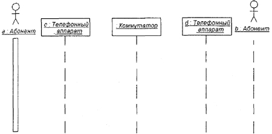
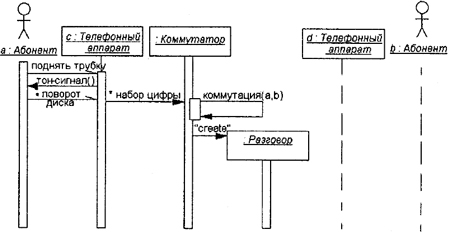
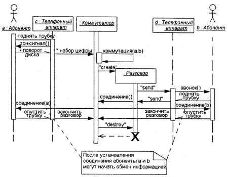

Как было отмечено в части I книги, одной из характерных особенностей систем различной природы и назначения является взаимодействие между собой отдельных элементов, из которых образованы эти системы. Речь идет о том, что различные составные элементы систем не существуют изолированно, а оказывают 'определенное влияние друг на друга, что и отличает систему как целостное образование от простой совокупности элементов.
В языке UML взаимодействие элементов рассматривается в информационном аспекте их коммуникации, т. е. взаимодействующие объекты обмениваются между собой некоторой информацией. При этом информация принимает форму законченных сообщений. Другими словами, хотя сообщение и имеет информационное содержание, оно приобретает дополнительное свойство оказывать направленное влияние на своего получателя. Это полностью согласуется с принципами ООАП, когда любые виды информационного взаимодействия между элементами системы должны быть сведены к отправке и приему сообщений между ними.
Для моделирования взаимодействия объектов в языке UML используются соответствующие диаграммы взаимодействия. Говоря об этих диаграммах, имеют в виду два аспекта взаимодействия. Во-первых, взаимодействия объектов можно рассматривать во времени, и тогда для представления временных особенностей передачи и приема сообщений между объектами используется диаграмма последовательности. Этот вид канонических диаграмм является предметом изучения настоящей главы.
Ранее, при изучении диаграмм состояния и деятельности, было отмечено одно немаловажное обстоятельство. Хотя рассмотренные диаграммы и используются для спецификации динамики поведения систем, время в явном виде в них не присутствует. Однако временной аспект поведения может иметь существенное значение при моделировании синхронных процессов, описывающих взаимодействия объектов. Именно для этой цели в языке UML используются диаграммы последовательности.
Во-вторых, можно рассматривать структурные особенности взаимодействия объектов. Для представления структурных особенностей передачи и приема сообщений между объектами используется диаграмма кооперации. Этот вид канонических диаграмм является предметом изучения главы 9.
На диаграмме последовательности изображаются исключительно те объекты, которые непосредственно участвуют во взаимодействии и не показываются возможные статические ассоциации с другими объектами. Для диаграммы последовательности ключевым моментом является именно динамика взаимодействия объектов во времени. При этом диаграмма последовательности имеет как бы два измерения. Одно — слева направо в виде вертикальных линий, каждая из которых изображает линию жизни отдельного объекта, участвующего во взаимодействии. Графически каждый объект изображается прямоугольником и располагается в верхней части своей линии жизни (рис. 8.1). Внутри прямоугольника записываются имя объекта и имя класса, разделенные двоеточием. При этом вся запись подчеркивается, что является признаком объекта, который, как известно, представляет собой экземпляр класса.
Примечание
Не исключается ситуация, когда имя объекта может отсутствовать на диаграмме последовательности. В этом случае указывается только имя класса, а сам объект считается анонимным.
Рис. 8.1. Различные графические примитивы диаграммы последовательности
Крайним слева на диаграмме изображается объект, который является инициатором взаимодействия (объект 1 на рис. 8.1). Правее изображается другой объект, который непосредственно взаимодействует с первым. Таким образом, все объекты на диаграмме последовательности образуют некоторый порядок, определяемый степенью активности этих объектов при взаимодействии друг с другом.
Второе измерение диаграммы последовательности — вертикальная временная ось, направленная сверху вниз. Начальному моменту времени соответствует самая верхняя часть диаграммы. При этом взаимодействия объектов реализуются посредством сообщений, которые посылаются одними объектами другим. Сообщения изображаются в виде горизонтальных стрелок с именем сообщения и также образуют порядок по времени своего возникновения. Другими словами, сообщения, расположенные на диаграмме последовательности выше, инициируются раньше тех, которые расположены ниже. При этом масштаб на оси времени не указывается, поскольку диаграмма последовательности моделирует лишь временную упорядоченность взаимодействий типа "раньше-позже".
Линия жизни объекта (object lifeline) изображается пунктирной вертикальной линией, ассоциированной с единственным объектом на диаграмме последовательности. Линия жизни служит для обозначения периода времени, в течение которого объект существует в системе и, следовательно, может потенциально участвовать во всех ее взаимодействиях. Если объект существует в системе постоянно, то и его линия жизни должна продолжаться по всей плоскости диаграммы последовательности от самой верхней ее части до самой нижней (объекты 1 и 2 на рис. 8.1).
Отдельные объекты, выполнив свою роль в системе, могут быть уничтожены (разрушены), чтобы освободить занимаемые ими ресурсы. Для таких объектов линия жизни обрывается в момент его уничтожения. Для обозначения момента уничтожения объекта в языке UML используется специальный символ в форме латинской буквы "X" (объект 3 на рис. 8.1). Ниже этого символа пунктирная линия не изображается, поскольку соответствующего объекта в системе уже нет, и этот объект должен быть исключен из всех последующих взаимодействий.
Вовсе не обязательно создавать все объекты в начальный момент времени. Отдельные объекты в системе могут создаваться по мере необходимости, существенно экономя ресурсы системы и повышая ее производительность. В этом случае прямоугольник такого объекта изображается не в верхней части диаграммы последовательности, а в той ее части, которая соответствует моменту создания объекта (объект 6 на рис. 8.2). При этом прямоугольник объекта вертикально располагается в том месте диаграммы, которое по оси времени совпадает с моментом его возникновения в системе. Очевидно, объект обязательно создается со своей линией жизни и, возможно, с фокусом управления.
Рис. 8.2. Графическое изображение различных вариантов линий жизни и фокусов управления объектов
В процессе функционирования объектно-ориентированных систем одни объекты могут находиться в активном состоянии, непосредственно выполняя определенные действия или в состоянии пассивного ожидания сообщений от других объектов. Чтобы явно выделить подобную активность объектов, в языке UML применяется специальное понятие, получившее название фокуса управления (focus of control). Фокус управления изображается в форме вытянутого узкого прямоугольника (см. объект 1 на рис. 8.1), верхняя сторона которого обозначает начало получения фокуса управления объекта (начало активности), а ее нижняя сторона — окончание фокуса управления (окончание активности). Этот прямоугольник располагается ниже обозначения соответствующего объекта и может заменять его линию жизни (объект 4 на рис. 8.2), если на всем ее протяжении он является активным.
С другой стороны, периоды активности объекта могут чередоваться с периодами его пассивности или ожидания. В этом случае у такого объекта имеются несколько фокусов управления (объект 5 на рис. 8.2). Важно понимать, что получить фокус управления может только существующий объект, у которого в этот момент имеется линия жизни. Если же некоторый объект был уничтожен, то вновь возникнуть в системе он уже не может. Вместо него лишь может быть создан другой экземпляр этого же класса, который, строго говоря, будет являться другим объектом.
В отдельных случаях инициатором взаимодействия в системе может быть актер или внешний пользователь. В этом случае актер изображается на диаграмме последовательности самым первым объектом слева со своим фокусом управления (рис. 8.3). Чаще всего актер и его фокус управления будут существовать в системе постоянно, отмечая характерную для пользователя активность в инициировании взаимодействий с системой. При этом сам актер может иметь собственное имя либо оставаться анонимным.
Иногда некоторый объект может инициировать рекурсивное взаимодействие с самим собой. Речь идет о том, что наличие во многих языках программирования специальных средств построения рекурсивных процедур требует визуализации соответствующих понятий в форме графических примитивов. На диаграмме последовательности рекурсия обозначается небольшим прямоугольником, присоединенным к правой стороне фокуса управления того объекта, для которого изображается это рекурсивное взаимодействие (объект 7 на рис. 8.3).
Рис. 8.3. Графическое изображение актера, рекурсии и рефлексивного сообщения на диаграмме последовательности
Как было отмечено выше, цель взаимодействия в контексте языка UML заключается в том, чтобы специфицировать коммуникацию между множеством взаимодействующих объектов. Каждое взаимодействие описывается совокупностью сообщений, которыми участвующие в нем объекты обмениваются между собой. В этом смысле сообщение (message) представляет собой законченный фрагмент информации, который отправляется одним объектом другому. При этом прием сообщения инициирует выполнение определенных действий, направленных на решение отдельной задачи тем объектом, которому это сообщение отправлено.
Таким образом, сообщения не только передают некоторую информацию, но и требуют или предполагают от принимающего объекта выполнения ожидаемых действий. Сообщения могут инициировать выполнение операций объектом соответствующего класса, а параметры этих операций передаются вместе с сообщением. На диаграмме последовательности все сообщения упорядочены по времени своего возникновения в моделируемой системе.
В таком контексте каждое сообщение имеет направление от объекта, который инициирует и отправляет сообщение, к объекту, который его получает. Иногда отправителя сообщения называют клиентом, а получателя — сервером. При этом сообщение от клиента имеет форму запроса некоторого сервиса, а реакция сервера на запрос после получения сообщения может быть связана с выполнением определенных действий или передачи клиенту необходимой информации тоже в форме сообщения.

Рис. 8.4. Графическое изображение различных видов сообщений между объектами на диаграмме последовательности
В языке UML могут встречаться несколько разновидностей сообщений, каждое из которых имеет свое графическое изображение (рис. 8.4).
Обычно сообщения изображаются горизонтальными стрелками, соединяющими линии жизни или фокусы управления двух объектов на диаграмме последовательности. При этом неявно предполагается, что время передачи сообщения достаточно мало по сравнению с процессами выполнения действий объектами. Считается также, что за время передачи сообщения с соответствующими объектами не может произойти никаких событий. Другими словами, состояния объектов остаются без изменения. Если же это предположение не может быть признано справедливым, то стрелка сообщения изображается под некоторым наклоном, так чтобы конец стрелки располагался ниже ее начала.
В отдельных случаях объект может посылать сообщения самому себе, инициируя так называемые рефлексивные сообщения (объект 8 на рис. 8.3). Такие сообщения изображаются прямоугольником со стрелкой, начало и конец которой совпадают. Подобные ситуации возникают, например, при обработке нажатий на клавиши клавиатуры при вводе текста в редактируемый документ, при наборе цифр номера телефона абонента.
Таким образом, в языке UML каждое сообщение ассоциируется с некоторым действием, которое должно быть выполнено принявшим его объектом. При этом действие может иметь некоторые аргументы или параметры, в зависимости от конкретных значений которых может быть получен различный результат. Соответствующие параметры будет иметь и вызывающее это действие сообщение. Более того, значения параметров отдельных сообщений могут содержать условные выражения, образуя ветвление или альтернативные пути основного потока управления.
Для изображения ветвления рисуются две или более стрелки, выходящие из одной точки фокуса управления объекта (фокус управления объекта 1 на рис. 8.5). При этом соответствующие условия должны быть явно указаны рядом с каждой из стрелок в форме сторожевого условия. Как нетрудно представить, если условие записано в форме булевского выражения, то ветвление будет содержать только две ветви. В любом случае условия должны взаимно исключать одновременную передачу альтернативных сообщений.
С помощью ветвления можно изобразить и более сложную логику взаимодействия объектов между собой (фокус управления объекта 1 на рис. 8.6). Если условий более двух, то для каждого из них необходимо предусмотреть ситуацию единственного выполнения. Рассматриваемый пример относится к моделированию взаимодействия программной системы обслуживания клиентов в банке. На этом примере диаграммы последовательности объект 1 передает управление одному из трех других объектов.
Рис. 8.5. Графическое изображение бинарного ветвления потока управления на диаграмме последовательности
Рис. 8.6. Графическое изображение тернарного ветвления потока управления на диаграмме последовательности
Условием ветвления может служить сумма снимаемых клиентом средств со своего текущего счета. Если эта сумма превышает $1000, то могут потребоваться дополнительные действия, связанные с созданием и последующим разрушением объекта 4. Если же сумма превышает $50, но не превышает $1000, то управление передается объекту 3. И, наконец, если сумма не превышает $50, то управление получает объект 2. При этом объекты 1, 2 и 3 постоянно существуют в системе. Объект 4 создается, только если справедливо первое из альтернативных условий. В противном случае он может быть никогда не создан. После выполнения требуемых действий объекты 2 и 3 просто информируют объект 1 о завершении соответствующих операций, не требуя от него никаких действий (пунктирная стрелка). Объект 4 после завершения своих действий уничтожается, передавая управление объекту 3, делая его активным (фокус управления).
В языке UML предусмотрены некоторые стандартные действия, выполняемые в ответ на получение соответствующего сообщения. Они могут быть явно указаны на диаграмме последовательности в форме стереотипа рядом с сообщением, к которому они относятся. В этом случае они записываются в кавычках. Используются следующие обозначения для моделирования действий:
Ниже представлена диаграмма последовательности для рассмотренного выше случая ветвления, дополненная стереотипными значениями (рис. 8.7).
Кроме стереотипов, сообщения могут иметь собственное обозначение операции, вызов которой они инициируют у принимающего объекта. В этом случае рядом со стрелкой записывается имя операции с круглыми скобками, в которых могут указываться параметры или аргументы соответствующей операции. Если параметры отсутствуют, то скобки все равно должны присутствовать после имени операции. Примерами таких операций могут служить следующие: "выдать клиенту наличными сумму (п)", "установить соединение между абонентами (а, Ь)", "сделать вводимый текст невидимым ()", "подать звуковой сигнал тревоги ()".
Примечание
Согласно принятой в языке UML системе обозначений такие имена операций записываются на английском с малой буквы и одним словом, возможно, состоящим из нескольких сокращенных слов, написанных без пробела и без кавычек. Если нет никаких дополнительных ограничений со стороны инструментальных средств визуализации канонических диаграмм, то дело вкуса отечественного разработчика, какие обозначения ему использовать в русскоязычной транслитерации. Возможно, для этой цели больше подходит вариант с нижней черточкой, исключающей пробелы в имени операции: "сделать_вводимый_текст_ невидимым()", чем вариант с заглавными буквами в середине имени операции: "сделатьВводимыйТекстНевидимым()".
Рис. 8.7. Диаграмма последовательности со стереотипными значениями сообщений
Временные ограничения на диаграммах последовательности
В отдельных случаях выполнение тех или иных действий на диаграмме последовательности может потребовать явной спецификации временных ограничений, накладываемых на сам интервал выполнения операций или передачу сообщений. В языке UML для записи временных ограничений используются фигурные скобки. Временные ограничения могут относиться как к выполнению определенных действий объектами, так и к самим сообщениям, явно специфицируя условия их передачи или приема. Важно понимать, что в отличие от условий ветвления, которые должны выполняться альтернативно, временные ограничения имеют обязательный или директивный характер для ассоциированных с ними объектов.
Временные ограничения могут записываться рядом с началом стрелки соответствующего сообщения. Но наиболее часто они записываются слева от этой стрелки на одном уровне с ней. Если временная характеристика относится к конкретному объекту, то имя этого объекта записывается перед именем характеристики и отделяется от нее точкой.
Примерами таких ограничений на диаграмме последовательности могут служить ситуации, когда необходимо явно специфицировать время, в течение которого допускается передача сообщения от клиента к серверу или обработка запроса клиента сервером:
Примечание
В первом из рассмотренных случаев знак "-" во временном ограничении обозначает арифметическую операцию вычитания (минус). Другие знаки являются обычными знаками сравнения величин. В последнем случае перед временной характеристикой указано имя объекта, к которому она относится.
Комментарии или примечания уже рассматривались ранее при изучении других видов диаграмм. Они могут включаться и в диаграммы последовательности, ассоциируясь с отдельными объектами или сообщениями. При этом используется стандартное обозначение для комментария — прямоугольник с "заломленным" правым верхним углом. Внутри этого прямоугольника записывается текст комментария на естественном языке.
8.3. Пример построения диаграммы последовательности
В качестве примера рассмотрим построение диаграммы последовательности для моделирования процесса телефонного разговора с использованием обычной телефонной сети. Объектами в этом примере являются: два абонента а и Ь, два телефонных аппарата end, коммутатор и сам разговор как объект моделирования. При этом как коммутатор, так и разговор являются анонимными объектами.
На первом этапе располагаем выбранные объекты на предполагаемой диаграмме (рис. 8.8). Заметим, что абонентов мы будем рассматривать как актеров, причем первый из них — а — играет активную роль, а второй — b — пассивную роль. Поэтому первый получает фокус управления сразу после своего появления в системе, а второй имеет только линию жизни. Коммутатор также имеет постоянную активность, что изображается его фокусом управления. Разговор как объект появляется только после установки соединения и уничтожается с его прекращением. Поэтому он будет изображен позже на этой же диаграмме последовательности.
Рис. 8.8. Начальный фрагмент диаграммы последовательности для моделирования телефонного разговора
Процесс взаимодействия в этой системе начинается с поднятия трубки телефонного аппарата первым абонентом. Тем самым он посылает сообщение телефонному аппарату с, которое переводит этот аппарат в активное состояние и вызывает действие — подачу тонового сигнала в телефонную трубку для первого абонента. Следующее действие также инициируется первым абонентом — набор цифр телефонного номера. Это представлено в форме итеративного сообщения со знаком "*" слева от его имени.
Заметим, что поднятие телефонной трубки и набор цифр номера являются физическими действиями и поэтому изображаются в форме простых асинхронных сообщений. После набора цифр'номера телефона аппарат с рекурсивно вызывает процедуру посылки коммутационных импульсов на коммутатор. Последний инициирует создание нового объекта в моделируемой системе — телефонного разговора. Дополненный фрагмент диаграммы последовательности изображен на рис. 8.9.
После создания анонимный объект "разговор" сразу получает фокус активности и посылает сообщение телефонному аппарату d на выполнение действия — звонка вызова. При этом второй абонент снимает трубку (асинхронное сообщение), тем самым устанавливается прямое соединение между абонентами а и Ь. После того как абоненты опустят трубки, разговор заканчивается. Тем самым объект "разговор" уничтожается. Окончательный вариант диаграммы последовательности может содержать некоторые временные ограничения и комментарии (рис. 8.10). Назначение отдельных сообщений соответствуют рассмотренным действиям.
Рис. 8.9. Дополненный фрагмент диаграммы последовательности для моделирования телефонного разговора
Рис. 8.10. Окончательный вариант диаграммы последовательности для моделирования телефонного разговора
Примечание
Дополнить диаграмму последовательности для этого примера временными ограничениями предлагается выполнить самостоятельно в качестве упражнения.
8.4. Заключительные рекомендации по построению диаграмм последовательности
Как уже отмечалось, построение диаграммы последовательности целесообразно начинать с выделения из всей совокупности тех и только тех классов, объекты которых участвуют в моделируемом взаимодействии. После этого все объекты наносятся на диаграмму с соблюдением некоторого порядка инициализации сообщений. Здесь необходимо установить, какие объекты будут существовать постоянно, а какие временно — только на период выполнения ими требуемых действий.
Когда объекты визуализированы, можно приступать к спецификации сообщений. При этом следует учитывать те роли, которые играют сообщения в системе. При необходимости уточнения этих ролей надо использовать их разновидности и стереотипы. Для уничтожения объектов, которые создаются на время выполнения своих действий, нужно предусмотреть явное сообщение.
Наиболее простые случаи ветвления процесса взаимодействия можно изобразить на одной диаграмме с использованием соответствующих графических примитивов. Однако следует помнить, что каждый альтернативный поток управления может существенно затруднить понимание построенной модели. Поэтому общим правилом является визуализация каждого потока управления на отдельной диаграмме последовательности. В этой ситуации такие отдельные диаграммы должны рассматриваться совместно как одна модель взаимодействия.
Дальнейшая детализация диаграммы последовательности связана с введением временных ограничений на выполнение отдельных действий в системе. Для простых асинхронных сообщений временные ограничения могут отсутствовать. Однако необходимость синхронизировать сложные потоки управления, как правило, требуют введение в модель таких ограничений. Общая их запись должна следовать семантике языка объектных ограничений, который рассмотрен в приложении.
| Каталог | Индекс раздела | Оглавление |